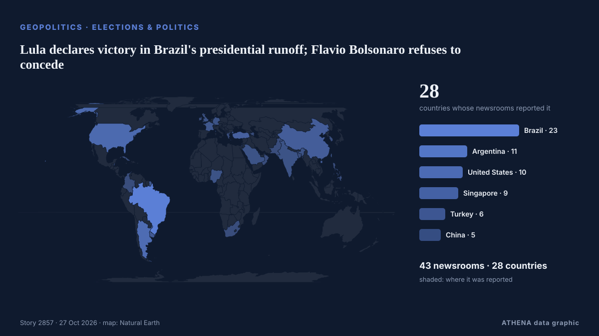

Lula declares victory in Brazil's presidential runoff; Flavio Bolsonaro refuses to concede

Defying opinion poll projections showing Lula in the lead, right-wing senator Flávio Bolsonaro takes lead over incumbent into second-round run-off. από Buenos Aires Times
Αναφέρθηκε ανεξάρτητα από 43 μέσα σε 28 χώρες από τις 5 Οκτ, πρώτο από το Buenos Aires Times· η κάλυψη βρίσκεται στο αποκορύφωμά της. Το ATHENA εκτιμά τον κίνδυνο μέτριο (3.0/10), κυρίως λόγω της σοβαρότητας της βλάβης που περιγράφεται και της γεωγραφικής και τομεακής εμβέλειάς του. Η βεβαιότητα είναι 91% (υψηλή), καθώς το επιβεβαιώνουν 43 ανεξάρτητα μέσα με μέση αξιοπιστία πηγών 76%.
Γιατί έχει σημασία: Οι εξελίξεις στην ασφάλεια και τη διπλωματία μπορούν να μετατοπίσουν συμμαχίες, εμπόριο και αγορές πολύ πέρα από τις χώρες που εμπλέκονται.
Τι άλλαξε: 4 νέες αναφορές από 4 μέσα στο 24ωρο έως 27 Οκτ.
Πρώτη διατύπωση: Brazil Poll Has Lula 50.6%, Flávio 49.4%
Οι τίτλοι των ειδήσεων παρουσιάζονται στα αγγλικά, όπως δημοσιεύτηκαν.
Με μια ματιά
Επιλέγεται, βαθμολογείται και γράφεται από τη δημοσιευμένη μεθοδολογία του ATHENA. Κανένας συντάκτης δεν παρεμβαίνει σε μεμονωμένα γεγονότα. Πώς παράγεται ›
| 05 Oct 05:14 UTC | 7 |
|---|---|
| 06 Oct 05:14 UTC | 1 |
| 07 Oct 05:14 UTC | 2 |
| 08 Oct 05:14 UTC | 0 |
| 09 Oct 05:14 UTC | 0 |
| 10 Oct 05:14 UTC | 0 |
| 11 Oct 05:14 UTC | 0 |
| 12 Oct 05:14 UTC | 0 |
| 13 Oct 05:14 UTC | 0 |
| 14 Oct 05:14 UTC | 0 |
| 15 Oct 05:14 UTC | 4 |
| 16 Oct 05:14 UTC | 6 |
| 17 Oct 05:14 UTC | 3 |
| 18 Oct 05:14 UTC | 2 |
| 19 Oct 05:14 UTC | 10 |
| 20 Oct 05:14 UTC | 0 |
| 21 Oct 05:14 UTC | 0 |
| 22 Oct 05:14 UTC | 3 |
| 23 Oct 05:14 UTC | 21 |
| 24 Oct 05:14 UTC | 19 |
| 25 Oct 05:14 UTC | 17 |
| 26 Oct 05:14 UTC | 4 |
| 17 Oct 11:31 UTC | 3.4 |
|---|---|
| 17 Oct 14:01 UTC | 1.6 |
| 24 Oct 02:07 UTC | 2.9 |
| 27 Oct 05:12 UTC | 3.0 |
Γιατί αυτοί οι αριθμοί
Σημασία
Κίνδυνος
Βεβαιότητα
Η κάλυψη — ποιος το ανέφερε και πότε
ο τίτλος όπως δημοσιεύτηκε · ανοίγει το πρωτότυπο- Buenos Aires Times · Αργεντινή · ArgentinaBrazil heads to run-off as Flávio Bolsonaro takes first place finish over Lula
- Buenos Aires Times · Αργεντινή · ArgentinaFans of Brazil's Lula hope for comeback against Bolsonaro
- Buenos Aires Times · Αργεντινή · ArgentinaBolsonaro clan wins big in multiple Brazil polls
- Buenos Aires Times · Αργεντινή · ArgentinaBolsonaro pushes Lula to brink of defeat ahead of Brazil run-off
- Democracy Now! · Ηνωμένες Πολιτείες · United StatesFar Right Makes Gains in Brazil as Flávio Bolsonaro Tops Lula in First Round of Presidential Race
- Buenos Aires Times · Αργεντινή · ArgentinaFlávio Bolsonaro rides right-wing surge into Brazil's election run-off
- Latin America Reports · LATFlávio Bolsonaro edges Lula in Brazil’s closest first-round presidential vote
- Buenos Aires Times · Αργεντινή · ArgentinaBrazil market euphoria hinges on fixes Flávio Bolsonaro is yet to lay out
- Latin America Reports · LATBrazilian markets rally after right-wing Flavio Bolsonaro leads in presidential first round
- Buenos Aires Times · Αργεντινή · ArgentinaFlávio Bolsonaro secures four key party endorsements in Brazil race
- The Straits Times · Σιγκαπούρη · SingaporeBrazil’s Bolsonaro racks up endorsements, shaping potential governing bloc
- The Rio Times · Βραζιλία · BrazilBrazil Runoff Odds Fall Below 80% for Flávio
- The Straits Times · Σιγκαπούρη · SingaporeBolsonaro, Lula in tight race ahead of Brazil runoff, poll shows
- Buenos Aires Times · Αργεντινή · ArgentinaNo more '6x1': Brazil's Congress approves shorter workweek
- The Rio Times · Βραζιλία · BrazilBrazil Runoff Poll Shows Race Tightening
- Al Jazeera English · Κατάρ · QatarLatest poll shows Bolsonaro maintaining edge over Lula in Brazil run-off
- Anadolu Agency (English) · Τουρκία · TurkeyNew poll shows narrowing race between Bolsonaro and Lula in Brazil presidential runoff
- The Rio Times · Βραζιλία · BrazilPoderData Poll Ties Lula, Flávio at 50%
- Colombia One · Κολομβία · ColombiaLula Closes Gap With Flavio Bolsonaro Ahead of Brazil’s Presidential Runoff
- The Rio Times · Βραζιλία · BrazilCiro’s Running Mate Backs Flávio Bolsonaro
- MercoPress · Ουρουγουάη · UruguayBolsonaro and Lula head into the final stretch of Brazil’s campaign in a statistical tie
- The Rio Times · Βραζιλία · BrazilVeritá Poll Puts Flávio at 51%, Lula at 49%
- The Rio Times · Βραζιλία · BrazilIpespe Poll Has Flávio 51.2%, Lula 48.8%
- RTÉ News · Ιρλανδία · Ireland'Liar,' 'clown': Lula and Bolsonaro spar in Brazil debate
- The Straits Times · Σιγκαπούρη · Singapore‘Liar’, ‘clown’: Lula and Bolsonaro spar in Brazil poll debate
- DW English · Γερμανία · GermanyBrazil: Lula, Bolsonaro clash in heated presidential debate
- ABC News (International) · Ηνωμένες Πολιτείες · United StatesBrazil's Lula and Flávio Bolsonaro trade barbs in 1st debate only days before presidential runoff
- Daily Maverick · Νότια Αφρική · South AfricaBrazil’s Bolsonaro, Lula spar in first debate as personal attacks fly
- The Straits Times · Σιγκαπούρη · SingaporeBolsonaro's lead over Lula narrows ahead of Brazil runoff, polls show
- Euronews English · Γαλλία · FranceLula supporters spell out his name in Rio waters before Brazil runoff
- Buenos Aires Times · Αργεντινή · Argentina'Liar,' 'clown' – Lula and Bolsonaro spar in Brazil poll debate
- The Rio Times · Βραζιλία · BrazilPoderData Poll Has Flávio 52%, Lula 48%
- Türkiye Today · Τουρκία · TurkeyBrazil’s Lula and Bolsonaro clash in debate before runoff
- AzerNews · Αζερμπαϊτζάν · AzerbaijanPoll shows Lula, Bolsonaro neck and neck
- Taipei Times · Ταϊβάν · TaiwanLula, Bolsonaro trade insults in Brazil poll debate
- The Rio Times · Βραζιλία · BrazilPoderData Poll Has Flávio 51%, Lula 49%
- The Straits Times · Σιγκαπούρη · SingaporeFlavio Bolsonaro and Lula about even ahead of Brazil runoff, Datafolha poll shows
- Havana Times · Κούβα · CubaBrazil’s Presidential Runoff: Lula’s Last Remake?
- NPR World · Ηνωμένες Πολιτείες · United StatesBrazil's runoff: Lula's legacy vs. Bolsonaro's dynasty
- The Rio Times · Βραζιλία · BrazilBrazil Poll Has Lula 50.6%, Flávio 49.4%